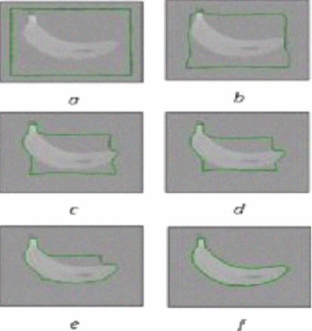
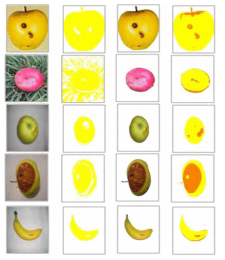

Ghobad Moradi et al proposed an ACM and MFCM absed fruit grading method. They start with the implementation of the automatic fruit shape extraction using the ACM algorithm. The ACM method is a method which will converges the contour towards features like lines and edges. This method is ideal for the foreground is image is distinctive from the background color. 
 Then the paper used a clustering method named Modified FCM algorithm. This algorithm is based on the FCM (Fuzzy C-Means) method. The feature of FCM method is that a data may belong to more than one clusters, and it has been mainly used on pattern recognition. The paper implemented the defect detection by using Modified FCM algorithm. The feature used for the clustering is the color of the image. From the result we are able to see the defect of the fruit are detected clearly. On the first column of the below image is the original image. The second column is MFCM without ACM. The third column is ACM result. The fourth column is MFCM with ACM. We can see the defects are detected.
Read the paper online